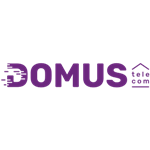

Atualmente possuo 8 meses de experiência atuando na empresa Domus Telecom, trabalhando como suporte técnico N1 e N2.
No suporte N1 realizo atendimento ao cliente, identificação de falhas, orientações e resolução de problemas relacionados à internet e equipamentos.
Já no suporte N2 realizo análises mais aprofundadas, configuração de roteadores, acesso remoto, troubleshooting e soluções voltadas à área de redes.
Meu principal objetivo é trabalhar para empresas do exterior, adquirindo experiência internacional e crescimento profissional.
Tenho muito interesse pelas áreas de Redes, Desenvolvimento Back-end e principalmente Cybersegurança, área na qual pretendo construir minha carreira.
Meu maior sonho é conquistar estabilidade financeira, construir uma família e morar fora do Brasil para conhecer novas culturas e viver experiências diferentes.
Também desejo ser um profissional reconhecido, trabalhando com aquilo que gosto e contribuindo através da tecnologia.